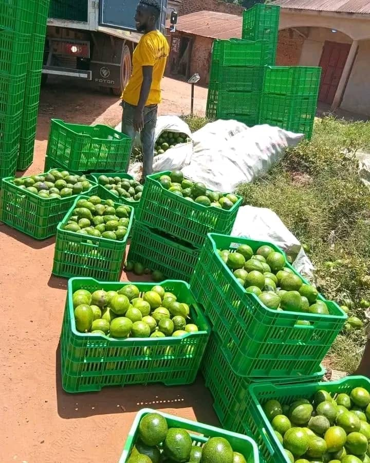
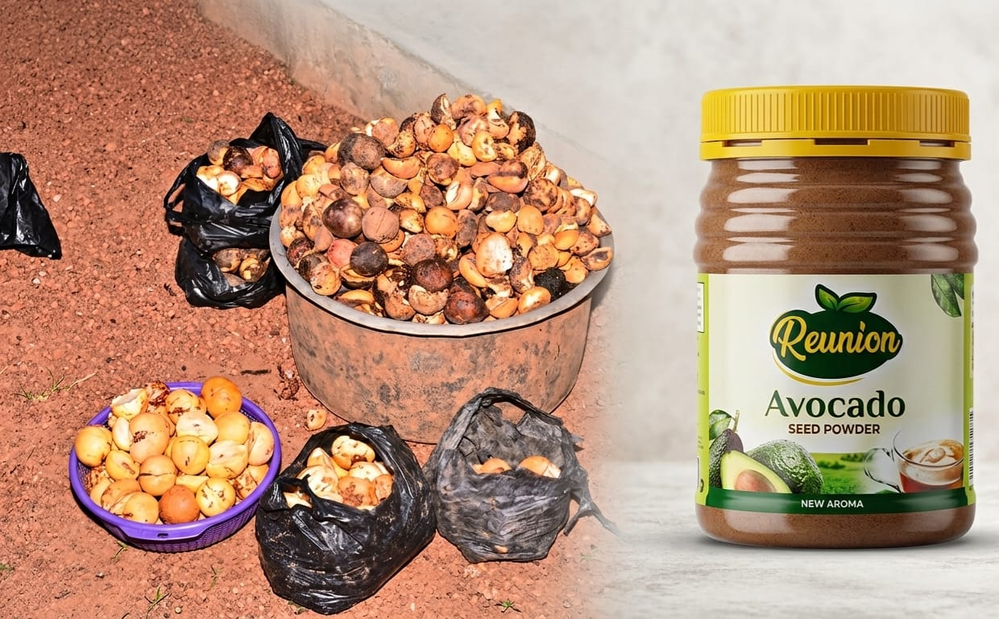
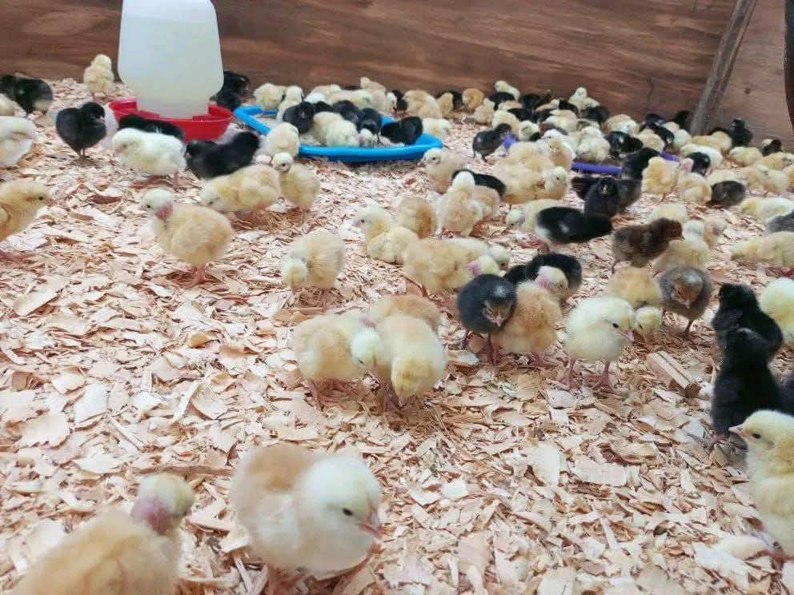
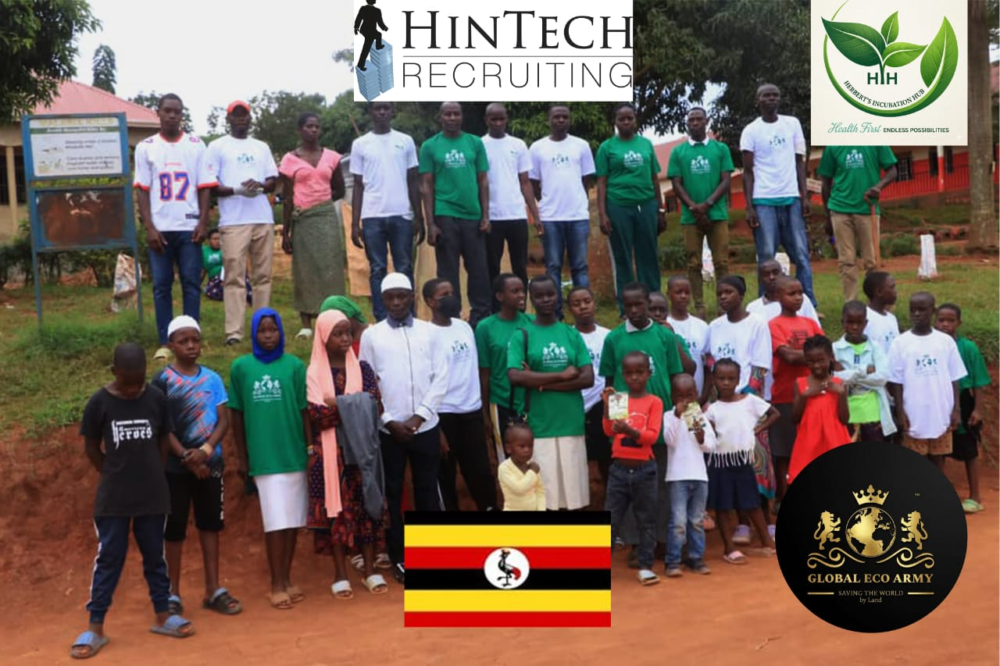
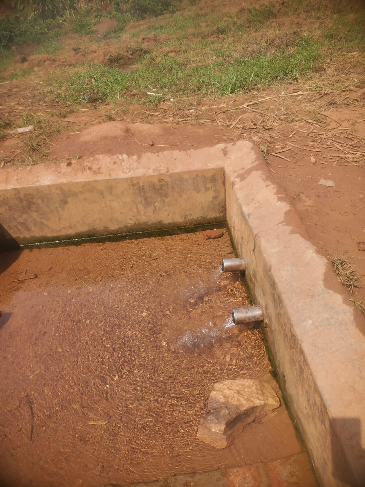

Circular enterprise · Mpigi, Uganda
Waste becomes wellness.
Herbert’s Incubation Hub connects agricultural value addition, environmental restoration and community enterprise—turning local resources into practical, sustainable opportunity.
Avocado value chain
From harvest to high-value use
01 / The model
One hub.
Four connected fields.
HIH is a multi-sector innovation incubator rooted in Mpigi.
Its work brings circular biotechnology, commercial livestock production, community infrastructure and agroforestry into one locally grounded enterprise model.
Integrated enterprise portfolio
Built around resources already within reach.
Avocado Bio-Upcycling
Transforming organic avocado seed waste into bio-powders, functional herbal teas and cosmetic ingredients.
BHerbert Skills Water Restoration
Restoring water infrastructure along the Muduma–Mpigi corridor while addressing erosion and drainage.
CCommercial Livestock Operations
Layer poultry and piggery operations shaped by planned feeding, health scheduling and biosecurity.
DCommunity & Agroforestry
Tree planting, land restoration and community campaigns that involve local women and young people.

Featured venture
Avocado seeds, reimagined.
HIH’s circular biotechnology work recovers organic avocado seeds and develops them into higher-value ingredients and products, including Reunion Avocado Seed Powder.
- Zero-waste circular economy model
- Laboratory training for local women
- Research-informed product development



References & updates
See the work in motion.
Watch environmental activities and follow Herbert’s Incubation Hub for continuing updates.
Partnership begins with useful work
Build a healthier local economy with HIH.
HIH welcomes conversations around circular agriculture, product development, community infrastructure, training and environmental action.
Start a conversation →